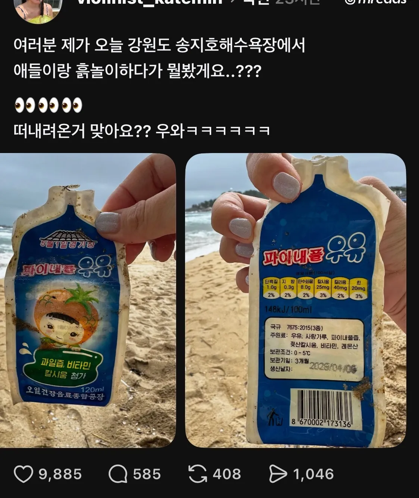
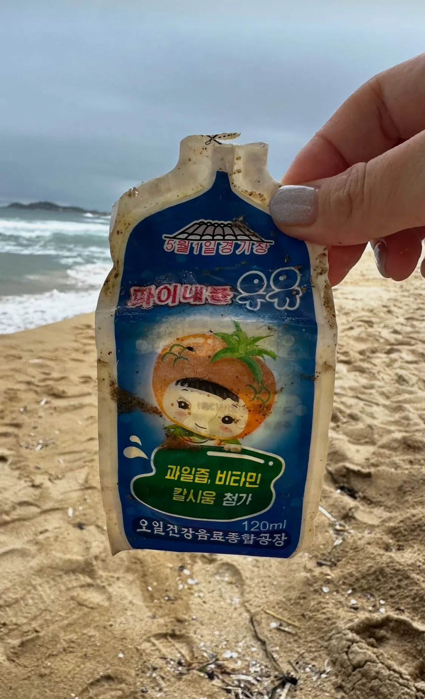
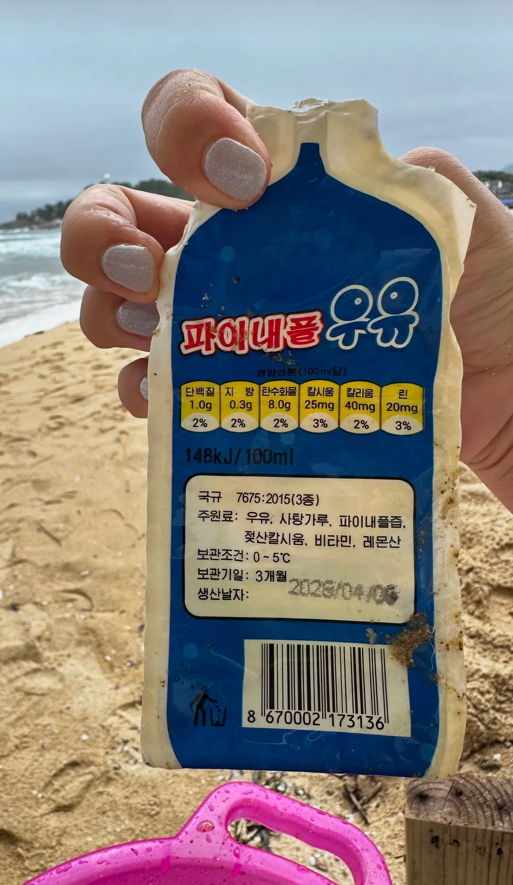
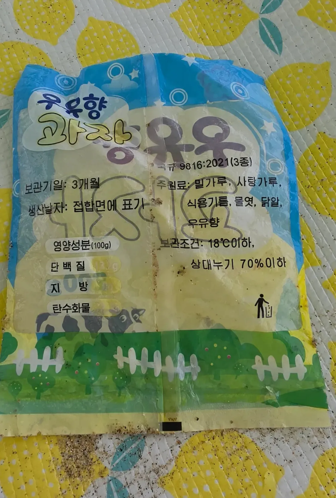
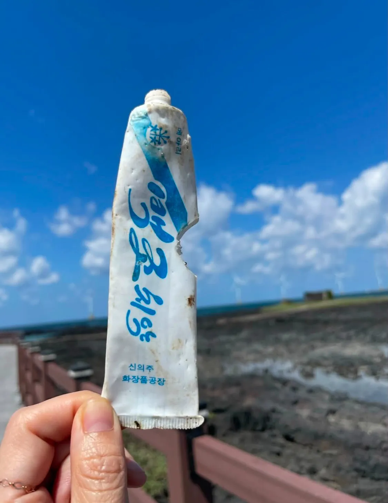
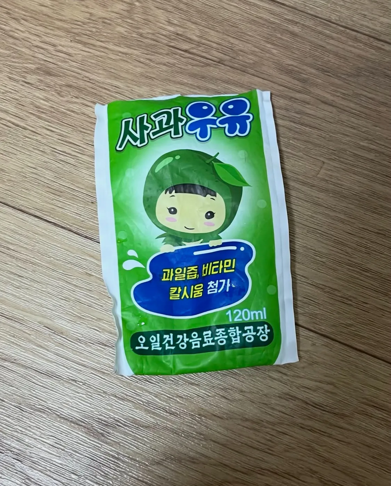
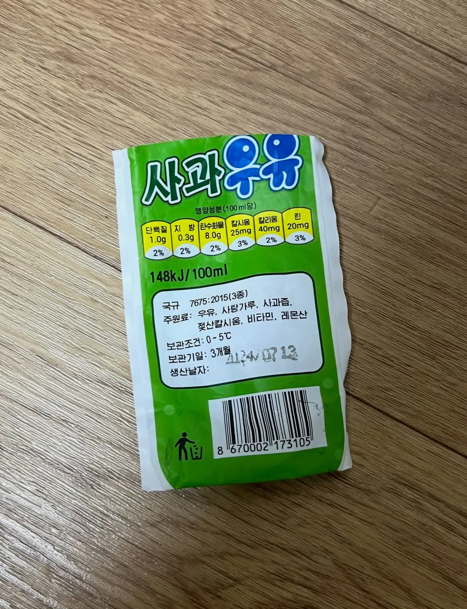
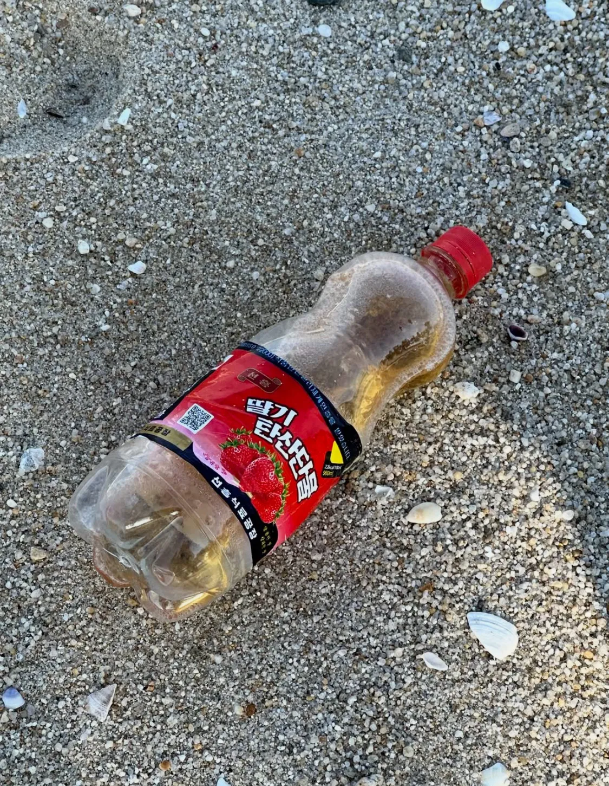
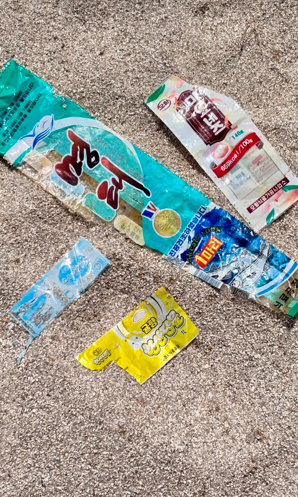
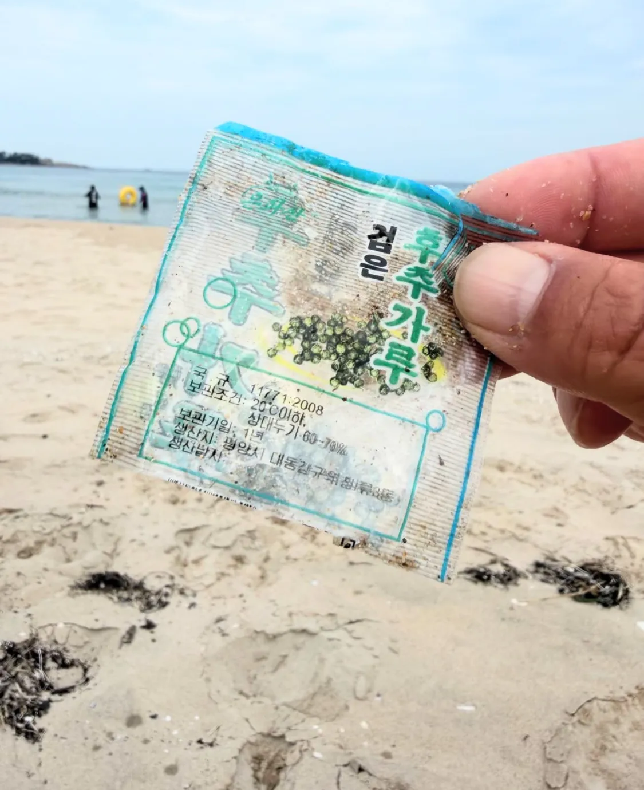

강원도 주민들이나 놀러간 사람들이 가끔 발견한다고 함










강원도 주민들이나 놀러간 사람들이 가끔 발견한다고 함
어떤 일본해안가에선 북한에서온걸로 추정되는 백골시신이 자주 출몰한대... ㄷㄷㄷ
뭐야 잘먹고 잘사네
지원 안해줘도 될듯
예전에 북한가봤을때 단물 저런거에 들어가는 첨가물중에 사과정액이라고 표시된게 있었는데 뭐였는지 기억이 안나네
북한을 갔다구요?
수학여행으로 가봄 북한 군인 실버 ak 실물로봤고 우비 주니깐 진짜 좋아하는 군인있었고 숙박은 컨테이너 박스에서 했음 ㅋㅋ
북한도 일부 관광 목적 개방된적이 있었지
90년대생들은 수학여행으로 많이들 갔지 금강산 등산도하고 북한 사람들이 남조선에서 온 애들이냐고 물어보고
생각보다 잘 먹고사네
저나라는 한 70년대80년대에 멈춰있는느낌
저기도 아나나스가 아니네
미국 싫다면서 미국식으로 부르네 ㅋㅋㅋ
ㄹㅇㅋㅋㅋ 단위도 영어임
탄산단물 ㄷㄷ
칼시움ㅌㅋㅋㅋㅋㅋㅋ
마요네즈는 정상적으로보르네
디자이너좀 지원해줘라 이게뭐냐
북한 디자인 볼 때마다 어설프게 한국을 따라하는 괴이같다는 생각이 듦
묘하게 불쾌한 골짜기가 있음
바코드가 있네. 리더기랑 포스기도 있나부네..
그와중에 치약튜브는 물고기가 한입 했나보네
방부제를 얼마나 넣은거야
의외로 2000년대 퀄리티
쟤네도..영양성분을 표기한다는게 신기하네
태우거나 매장도 안하고 그냥 바다에 다 버리나
솔직히 저 보관기간 3개월마저 믿음이 안간다ㅋㅋㅋ
저 치약으로 이 닦으면 되려 썩을 것 같은 느낌이네 ㅋㅋ
키로쥴ㅋㅋㅋ재밋다 신기하네
미제 싫다면서 아나나스라고 안하네ㅋㅋㅋ
파인애플 우유, 사과 우유 먹어보고 싶다
강화도 민머루 해수욕장도 종종 북한 쓰레기 접함
치약은 복어가 벌써 한입 한듯 ㅋㅋ
와 148kJ
머야 북한도 맛있는거 있나보네
이새끼들 쓰레기 처리 젖같이 하는구나
이도 닦을 줄 아는구나
일본 해안가에도 한국이나 중국에서 떠내려온 쓰레기 보임